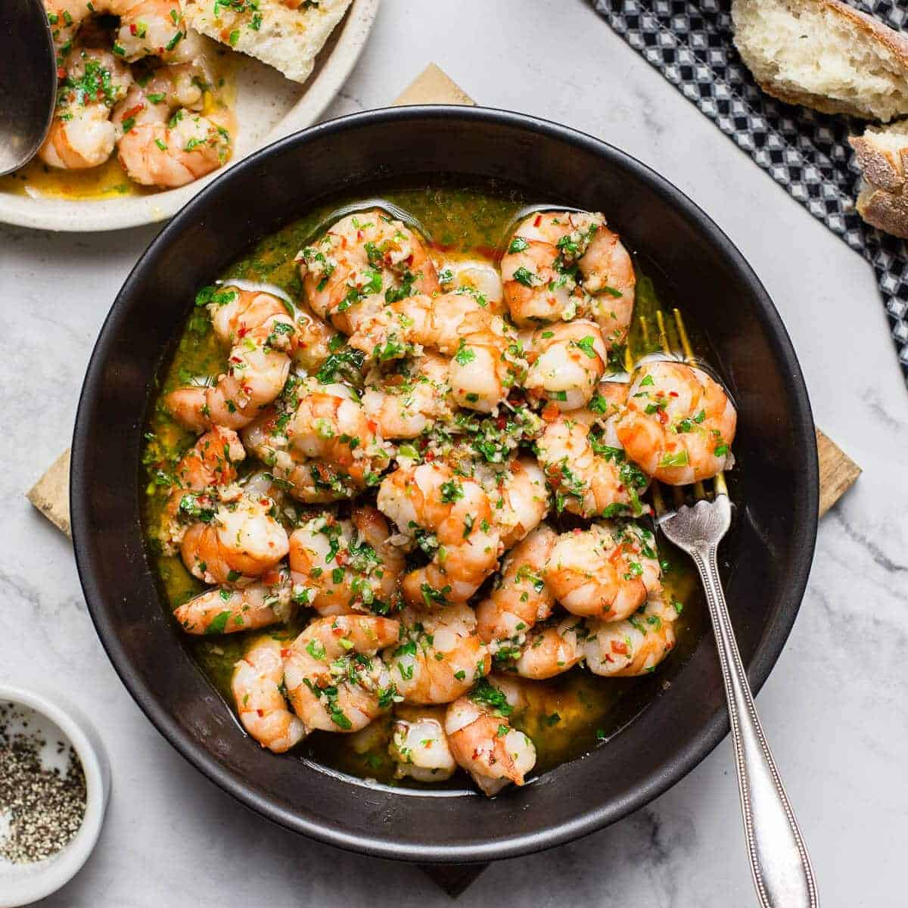

Description
Garlic Butter Shrimp is a delicious seafood dish made with fresh shrimp, garlic, and butter.
It has a rich and savory flavor. It is best served with hot steamed rice.
Ingredients
- 500 grams shrimp
- 5 cloves garlic, minced
- 4 tablespoons butter
- 1 tablespoon cooking oil
- 1 tablespoon lemon juice
- Salt and pepper
- Chopped parsley
Steps
- Clean and wash the shrimp.
- Heat the cooking oil and butter in a pan.
- Add the minced garlic and cook until fragrant.
- Add the shrimp and cook until they turn pink.
- Add lemon juice, salt, and pepper.
- Mix all the ingredients together.
- Garnish with chopped parsley and serve.